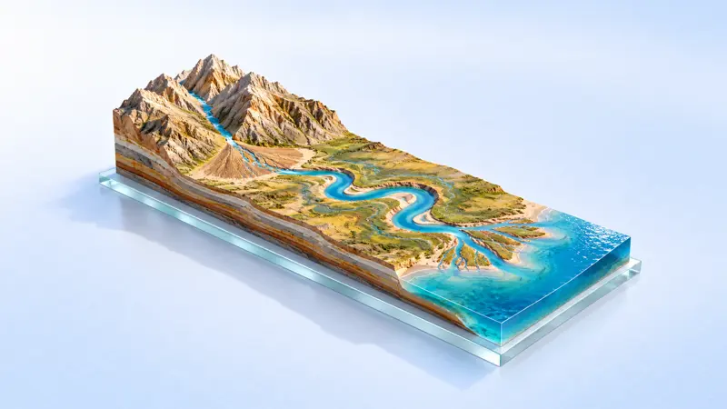

Địa lí
Phân tích chế độ nước của sông Hồng
Bài 13: Thực hành — Phân tích chế độ nước của sông Hồng · tr.44
Đối chiếu chương trình Địa lí 10 bộ Kết nối tri thức. Mỗi bài là một thế giới 3D kéo thả, điều chỉnh, cắt lớp được — mở trực tiếp bằng trình duyệt, mất mạng vẫn chiếu được.

Bài 13: Thực hành — Phân tích chế độ nước của sông Hồng · tr.44

Bài 18: Quy luật địa đới và quy luật phi địa đới · tr.53–54
Bài 7: Nội lực và ngoại lực · tr.24–26
“Đồng bằng sông Hồng và đồng bằng sông Cửu Long được hình thành chủ yếu bởi quá trình nào? (Vận dụng 1, tr.26)”
17 bài, nhóm theo chương sách giáo khoa.

Bài 5: Hệ quả địa lí các chuyển động của Trái Đất · tr.17–20
“Cùng một thời điểm, vì sao Bắc Kinh là buổi trưa, Niu Y-oóc lại là nửa đêm, mà ban ngày mùa hè lại dài hơn mùa đông?”
Bài 5: Hệ quả địa lí các chuyển động của Trái Đất · tr.17–20
“Độ cao Mặt Trời lúc chính ngọ và hướng Mặt Trời lúc chính ngọ ở nơi em ở, vì sao trong năm lại thay đổi có quy luật?”

Bài 7: Nội lực và ngoại lực · tr.24–26
“Từ Hà Khách viết «Đỉnh nhọn đứng tách rời, xếp hàng khoe sắc» — những đỉnh nhọn như mọc lên từ lòng đất ấy, một tầng đá đã biến thành chúng như thế nào?”
Bài 7: Nội lực và ngoại lực · tr.24–26
“Đồng bằng sông Hồng và đồng bằng sông Cửu Long được hình thành chủ yếu bởi quá trình nào? (Vận dụng 1, tr.26)”

Bài 9: Khí quyển, các yếu tố khí hậu · tr.28–34


Bài 12: Nước biển và đại dương · tr.41–44

Bài 12: Nước biển và đại dương (mở rộng) · tr.41–44
Bài 13: Thực hành — Phân tích chế độ nước của sông Hồng · tr.44

Bài 11: Thủy quyển, nước trên lục địa · tr.37–40

Bài 14: Đất trên Trái Đất · tr.45–46
Bài 18: Quy luật địa đới và quy luật phi địa đới · tr.53–54
Chuyên đề 10.1: Biến đổi khí hậu · tr.4–15
“Vì sao bờ sông đoạn Trấn Giang của sông Trường Giang liên tục dịch chuyển về phía bắc?”
Bấm "Bắt đầu học", đi từng bước bằng nút "Bước sau" hoặc phím tắt; bước nào chưa làm thì bài tự trình diễn.
Mỗi bài là một file HTML độc lập — tải về máy, mất mạng, máy chiếu hay bảng tương tác đều dùng được.
Link từng bài hoặc cả trang này đều mở trực tiếp được, đưa vào website trường hay nền tảng học tập đều tiện.
Số trong bài là số minh hoạ của sách gốc hoặc số thật có ghi nguồn; chỗ nào chưa kiểm chứng sách giấy đều ghi rõ trong bài.